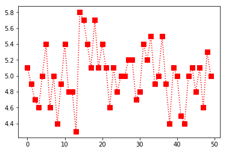
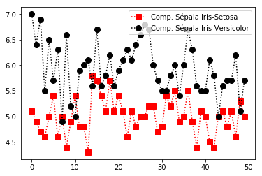

PYTHON
Como toda boa análise de dados, é necessário uma boa ferramenta de manipulação destes dados. Nesta documentação falaremos o tempo todo em ferramentas de manipulação de dados. Logo, recomendo fortemente que você tenha instalado a distribuição anaconda, pois ela já vem munida da linguagem de programação python e sua principais bibliotecas, como pandas, numpy, matplotlib, seaborn etc. Caso contrário, você poderá instalar o python e as bibliotecas separadamente. Segue o link do Anaconda e do python.
Observação: Recomendo que instale o pack anaconda, assim não precisará instalar mais nada.
COMANDOS ÚTEIS
Lista de comandos para análise de dados em python
Para entender o Jupyter
Dois modos
- modo edição: escreve em uma célula
- modo comando: movimenta as células
Dois tipos de células
- código (esc, depois y)
- markdown (esc, depois m)
Modo comando (azul)
- m - muda célula para markdown
- y - muda célula para python
- a - cria célula acima (above)
- b - cria célula abaixo (bellow)
- v - cola célula
- c - copia célula
- x - recorta/apaga célula
- f - pesquisar e substituir palavras
- l - mostra números das linhas
- h - lista de atalhos
- 00 (zero duas vezes) - reinicia o notebook
- SHIFT - M: mescla células
- CTRL + SHIFT + (sinal de menos): divide célula
Modo edição (verde)
- SHIFT-ENTER - executa os comandos que estão dentro da célula
- objeto.
- sugestões de métodos
Alguns comandos
- %matplotlib inline - para que os gráficos apareçam no documento (um resquício de versões antigas)
- import pandas as pd - carrega algum pacote (p. ex., pandas) como alguma sigla (p. ex., pd)
- x = [209, 32, 4, 23, 45] - cria um objeto chamado x contendo uma lista com os números 209, 32, 4, 23 e 45. Atenção: o python começa a contar em zero.
- x[0] - mostra o primeiro elemento da lista (209),
- x[1] mostra o segundo elemento (32) etc.
- x[1:4] - mostra os números nas posições 1, 2, 3 (32, 4 e 23)
- x[:2] - mostra todos os elementos até o terceiro (209 e 32), não incluindo o terceiro (intervalo aberto).
- x[3:] - mostra todos os elementos a partir do quarto (23 e 45), incluindo o quarto.
- x[:] - mostra todos os elementos da lista.
- len(x) - mostra o tamanho de x. Nesse caso, 3.
- sum([209, 32, 4, 23 e 45]) ou sum(x) - soma os valores.
- min(x) e max(x) - mostra os valores mínimos e máximos.
Operadores matemáticos
- 3 * 2 (multiplicação)
- 6 / 3 (divisão)
- 2 ** 3 (potenciação (p. ex, dois elevado a três))
- = (atribuição (p. ex., x recebe 3))
- == (teste de igualdade (p. ex., ‘município == “Varginha”’ testa se o município é Varginha)).
- != (teste de desigualdade (p. ex., ‘município != “Varginha”’ testa se o município não é Varginha).
- & ( operador lógico e)
- | (operador lógico ou)
- <= >= (menor ou igual que, maior ou igual que)
Ler dados e mostrar informações básicas
Os exemplos a seguir foram elaborados com uma base em dados do pnad (Pesquisa Nacional por Amostra de Domicílios - IBGE), isso explica a utilização do pnad na maioria dos comandos.
- pnad = pd.read_csv('pnad022017.csv') - lê o arquivo csv e o transforma em um objeto dataframe chamado pnad
- pnad = pd.read_excel('pnad022017.xls') - lê o arquivo do Excel (xls ou xlsx) e o transforma em um objeto dataframe.
- pnad.shape - mostra o número de linhas e colunas do dataframe. Obs: nesse caso não é preciso abrir e fechar parêntesis.
- pnad.columns - mostra o nome das colunas (variáveis). Obs: nesse caso não é preciso abrir e fechar parêntesis.
- pnad.head(10) - mostra as primeiras dez linhas do dataframe, o padrão é mostrar 5.
- pnad.tail(10) - mostra as últimas dez linhas do dataframe.
- pnad.info() - mostra os tipos das variáveis e o tamanho do dataframe na memória.
- pnad.loc[ :, ['sexo', 'idade', 'renda']] - subseleção por rótulos (labels), mostra todas as linhas, apenas das variáveis indicadas.
- pnad.iloc[ :10, [3, 4, 5]] - subseleção por posição (i). No exemplo, mostra apenas as primeiras das variáveis nas posições indicadas.
Atenção: note o uso de dois pares de colchetes em .loc e .iloc. O primeiro deles deriva do fato de que funções usam colchetes ao invés pois são subseleções, como no caso das listas explicado acima. O segundo par de colchete é usado quando queremos indicar mais de um elemento, situação em que é preciso criar uma lista.
Estatísticas básicas
- pnad.describe() - mostra o resumo estatístico (mínimo, máximo, média, mediana e quartis) de todas as variáveis do dataframe.
- pnad.min() - mostra o valor mínimo de todas as variáveis. O mesmo pode ser feito com todos os comandos abaixo.
- pnad.renda.describe() - mostra o resumo estatístico da variável selecionada.
- pnad.renda.min() - mostra a observação com a menor renda.
- pnad.renda.max() - a maior renda.
- pnad.renda.mean() - a média da renda.
- pnad.renda.std() - o desvio padrão da renda.
- pnad.renda.var() - a variância da renda.
- pnad.renda.mad() - o desvio absoluto médio da renda.
- pnad.renda.sum() - o somatório da renda.
- pnad.renda.cumsum() - a soma acumulada da renda.
- pnad.cov( ) - a matriz de covariâncias
- pnad.corr( ) - a matriz de correlações.
- pnad.loc[ :, [‘renda’, ‘idade’, ‘estudo’]].corr() - a correlação entre a renda, a idade e anos de estudo.
Operações com dataframes
- pd.ocup_cod.unique() - mostra todos os valores não repetidos da variável ocup_cod (código da ocupação).
- pd.sexo.value_counts() - mostra quantas observações há em cada um valores da variável sexo.
- pnad.query(‘renda > 10000’) - seleciona apenas as observações com renda maior do que 10 mil.
- pnad.query(‘renda > 10000 & idade < 60 & sexo == 2’) - apenas observações com renda maior do que 10 mil, idade menor do que 60 e que sejam mulheres (o sexo feminino foi codificado como 2).
- pnad.groupby('sexo').idade.mean() - agrupa as observações por sexo e mostra a média de idade de cada um dos sexos.
- pnad.sort_values(by='renda', ascending=False) - ordena as observações por renda, em ordem decrescente.
- Ajuda - SHIFT-TAB quando o curso estiver em algum comando. Segure o SHIFT e vá apertando o TAB até quatro vezes para ir aumentando o tamanho da ajuda.
- pnad.head? - o mesmo que apertar SHIFT-TAB quatro vezes, mostra a documentação do comando .head().
- pnad.head?? - mostra o código usado pela função .head().
Numpy
(Introdução ao Numpy)
O NumPy é uma poderosa biblioteca da linguagem de programação Python, que permite trabalhar com eficiência vetores, matrizes, arranjos e permite diversas funções e operações matemáticas. Assim como no python, o Numpy possui um sintaxe clara e objetiva. Dentro da matemática, esta biblioteca permite trabalhar, de forma aplicada, com arranjos multidimensionais, matrizes de n dimensões, álgebra linear, geração de números aleatórios etc.
Para mais informações sobre o Numpy clique aqui.
Instalação - NumPy
Essa biblioteca não é nativa do Python, logo você precisará instalar. Se você baixou o pacote Anaconda, como recomendado, o numpy já estará incluso. Caso contrário, você deverá utilizar a ferramenta pip do seu python. Digite o seguinte comando no seu terminal linux ou prompt windowns.
pip install numpy
Ttutorial
Importando a biblioteca
Utilizando o editor de sua preferência como o vsCode, atom ou Pycharme, importe a biblioteca.
import numpy as np
Criando uma Array(Matriz)
No código abaixo podemos observar um exemplo de uma list, pois o python não oferece suporte para arrays, porém o Numpy permite que tratemos uma list como um array, como será observado no exemplo 2.
Exemplo 1: List
In [1]: lista = [10,20,40,30]
In [2]: type (lista)
Out[2]: list
Exemplo 2: Numpay Array
In [1]: Matriz = [10,20,40,30]
In [2]: type (Matriz)
Out[2]: numpy.ndarray
Manipulando Arrays
Criando uma matriz
In [1]: m2 = np.array ([[1, 2], [3, 4]])
In [2]: m2
Out[2]: array([[1, 2],
[3, 4]])
Selecionando elementos de uma matriz
In [3]: print(m2[0])
Out[3]: [1 2]
In [4]: print(m2[1])
Out[4]: [3 4]
In [5]: print(m2[1][0])
Out[5]: 3
Matriz transposta
In [3]: print(m2.transpose())
Out[5]: [[1 3]
[2 4]]
Criando novas matrizes
In [6]: m3 = np.array([[5,6], [7,8]])
In [7]: m4 = np.array([[1,2], [3,4]])
Somando matrizes OBS: a soma, a subtração e a multiplicação funcionam como na geometria. Para manipulações de dados de modo convencional do python, utilizar uma list.
In [8] print(m3 + m4)
Out[8] [[ 6 8]
[10 12]]
Somando todos os elementos OBS: foram somados os elementos da matriz m3, criada logo acima.
In [9] print (m3.sum())
Out[9] 26
Média Aritmética
In [10]: print (m4.mean())
Out[10]: 2.5
Fatiamento de Array
Criando nova matriz
In [11]: m4 = np.array([[1,2,5,10], [3,4,6,8],[5,7,6,8],[3,2,0,4]])
In [12]: m4
Out[12]: [[ 1, 2, 5, 10],
[ 3, 4, 6, 8],
[ 5, 7, 6, 8],
[ 3, 2, 0, 4]]
Fatiando a Matriz
In [13]: print(m4[1:3])
Out[13]: [[3, 4, 6, 8],
[5, 7, 6, 8]]
In [14]: print(m4[::2])
Out[14]: [[ 1, 2, 5, 10],
[ 5, 7, 6, 8]]
In [15]: np.array_split(x8,2,axis=0)
Out[15]: [array([[ 1, 2, 5, 10]]), array([[5, 7, 6, 8]])]
Manipulando termos da Array
Criando nova matriz
In [16]: m5 = np.array([[12,2,27,12],[31,4,5,25]])
In [17]: print(m5)
Out[17]: [[12, 2, 27, 12],
[31, 4, 5, 25]]
Trocando um termo da matriz
In [18]: m5[0,0] = 100
In [19]: print(m5)
Out[19]: [[100, 2, 27, 12]
[ 31, 4, 5, 25]]
Criando duas matrizes
In [20]: m6 = np.array([1,2,3])
In [21]: m61 = np.array([4,5,8])
anexar apenas um termo
In [22]: Result = np.insert(m6, 1, 10)
In [23]: print(Result)
Out[23]: [ 1 10 2 3]
anexar vários termos
In [22]: varios = np.append(m6, [10,15,16])
In [23]: print(varios)
Out[23]: [ 1, 2, 3, 10, 15, 16]
concatenar dois arrays
In [24]: Result2 = np.concatenate((m6, m61), axis=0)
In [25]: print(Result2)
Out[25]: [1 2 3 4 5 8]
anexar em dimensões de eixo 0
In [26]: m7 = np.array([[1,2,3],[5,8,7]])
In [27]: np.append(m7, [[8,8,8]], axis=0)
Out[27]: array([[1, 2, 3],
[5, 8, 7],
[8, 8, 8]])
anexar em dimensões de eixo 1
In [28]: m8 = np.array([[1,2,3],[5,9,7]])
In [29]: np.append(m8, [[8],[8]], axis=1)
Out[29]: array([[1, 2, 3, 8],
[5, 9, 7, 8]])
deletar termo de uma matriz
In [30]: m9 = np.array([[1,2],[3,4],[5,6]])
#deletando em axis 0
In [31]: np.delete(m9, 1, 0)
Out[31]: array([[1, 2],
[5, 6]])
#deletando em fatiamento(com razão 2)
In [32]: m10 = np.array([[1,2,3],[3,4,7],[5,6,4]0,[4,5,9]])
In [33]: np.delete(m10,np.s_[::2],0)
Out[32]: array([[1, 2],
[5, 6]])
MATPLOTLIB
Segundo a documentação oficial, o Matplotlib é uma biblioteca de plotagem 2D do Python que produz inúmeros gráficos de qualidade em uma variedade de formatos e ambientes interativos. O Matplotlib pode ser usado em scripts Python, nos shells do Python e do IPython, no notebook Jupyter, nos servidores de aplicativos da web e em kits de ferramentas de interface gráfica do usuário. Para mais informações sobre esta biblioteca, clicar aqui.
Neste tutorial, o matplotlib será utilizado com o auxíio do numpy e do data-set iris, que pode ser encontrado aqui. OBS: cliclar na opção iris.data
Instalação - Matplotlib
Essa biblioteca não é nativa do Python, logo você precisará instalar. Se você baixou o pacote Anaconda, como recomendado nesta documentação, o matplotlib já estará incluso Caso contrário, você deverá utilizar a ferramenta pip do seu python. Digite o seguinte comando no seu terminal linux ou prompt windowns.
pip install matplotlib
Tutorial
Importando as bibliotecas Utilizando o editor de sua preferência como o vsCode, atom ou Pycharm, importe as bibliotecas.
import numpy as np
import matplotlib.pyplot as plt
%matplotlib inline
O uso do matplotlib inline é recomendado para quem estiver utilizando o jupyter, para que o gráfico seja plotado em sua linha de comando. Quem estiver utilizando o shell, terminal ou ipython, recomenda-se colocar o plt.show() no final de cada chamada de gráfico.
Lendo o data set
Atenção: o caminho ../_DATASET corresponde ao local em que está salvo o meu arquivo iris.data.
In [1]: data = np.genfromtxt('../_DATASET/iris.data', delimiter=',', usecols=(0,1,2,3))
In [2]: data
Out[2]: array ([[5.1, 3.5, 1.4, 0.2],
[4.9, 3. , 1.4, 0.2],
[4.7, 3.2, 1.3, 0.2],
[4.6, 3.1, 1.5, 0.2],
[5. , 3.6, 1.4, 0.2],
[5.4, 3.9, 1.7, 0.4],
[4.6, 3.4, 1.4, 0.3],
[5. , 3.4, 1.5, 0.2],
[4.4, 2.9, 1.4, 0.2],
[4.9, 3.1, 1.5, 0.1],
[5.4, 3.7, 1.5, 0.2],
[4.8, 3.4, 1.6, 0.2],
[4.8, 3. , 1.4, 0.1],
[4.3, 3. , 1.1, 0.1],
[5.8, 4. , 1.2, 0.2],
[5.7, 4.4, 1.5, 0.4],
[5.4, 3.9, 1.3, 0.4],
[5.1, 3.5, 1.4, 0.3],
[5.7, 3.8, 1.7, 0.3],
[5.1, 3.8, 1.5, 0.3],
[5.4, 3.4, 1.7, 0.2],
[5.1, 3.7, 1.5, 0.4],
[4.6, 3.6, 1. , 0.2],
[5.1, 3.3, 1.7, 0.5],
[4.8, 3.4, 1.9, 0.2],
[5. , 3. , 1.6, 0.2],
[5. , 3.4, 1.6, 0.4],
[5.2, 3.5, 1.5, 0.2],
[5.2, 3.4, 1.4, 0.2],
[4.7, 3.2, 1.6, 0.2],
[4.8, 3.1, 1.6, 0.2],
[5.4, 3.4, 1.5, 0.4],
[5.2, 4.1, 1.5, 0.1],
[5.5, 4.2, 1.4, 0.2],
[4.9, 3.1, 1.5, 0.1],
[5. , 3.2, 1.2, 0.2],
[5.5, 3.5, 1.3, 0.2],
[4.9, 3.1, 1.5, 0.1],
[4.4, 3. , 1.3, 0.2],
[5.1, 3.4, 1.5, 0.2],
[5. , 3.5, 1.3, 0.3],
[4.5, 2.3, 1.3, 0.3],
[4.4, 3.2, 1.3, 0.2],
[5. , 3.5, 1.6, 0.6],
[5.1, 3.8, 1.9, 0.4],
[4.8, 3. , 1.4, 0.3],
[5.1, 3.8, 1.6, 0.2],
[4.6, 3.2, 1.4, 0.2],
[5.3, 3.7, 1.5, 0.2],
[5. , 3.3, 1.4, 0.2],
[7. , 3.2, 4.7, 1.4],
[6.4, 3.2, 4.5, 1.5],
[6.9, 3.1, 4.9, 1.5],
[5.5, 2.3, 4. , 1.3],
[6.5, 2.8, 4.6, 1.5],
[5.7, 2.8, 4.5, 1.3],
[6.3, 3.3, 4.7, 1.6],
[4.9, 2.4, 3.3, 1. ],
[6.6, 2.9, 4.6, 1.3],
[5.2, 2.7, 3.9, 1.4],
[5. , 2. , 3.5, 1. ],
[5.9, 3. , 4.2, 1.5],
[6. , 2.2, 4. , 1. ],
[6.1, 2.9, 4.7, 1.4],
[5.6, 2.9, 3.6, 1.3],
[6.7, 3.1, 4.4, 1.4],
[5.6, 3. , 4.5, 1.5],
[5.8, 2.7, 4.1, 1. ],
[6.2, 2.2, 4.5, 1.5],
[5.6, 2.5, 3.9, 1.1],
[5.9, 3.2, 4.8, 1.8],
[6.1, 2.8, 4. , 1.3],
[6.3, 2.5, 4.9, 1.5],
[6.1, 2.8, 4.7, 1.2],
[6.4, 2.9, 4.3, 1.3],
[6.6, 3. , 4.4, 1.4],
[6.8, 2.8, 4.8, 1.4],
[6.7, 3. , 5. , 1.7],
[6. , 2.9, 4.5, 1.5],
[5.7, 2.6, 3.5, 1. ],
[5.5, 2.4, 3.8, 1.1],
[5.5, 2.4, 3.7, 1. ],
[5.8, 2.7, 3.9, 1.2],
[6. , 2.7, 5.1, 1.6],
[5.4, 3. , 4.5, 1.5],
[6. , 3.4, 4.5, 1.6],
[6.7, 3.1, 4.7, 1.5],
[6.3, 2.3, 4.4, 1.3],
[5.6, 3. , 4.1, 1.3],
[5.5, 2.5, 4. , 1.3],
[5.5, 2.6, 4.4, 1.2],
[6.1, 3. , 4.6, 1.4],
[5.8, 2.6, 4. , 1.2],
[5. , 2.3, 3.3, 1. ],
[5.6, 2.7, 4.2, 1.3],
[5.7, 3. , 4.2, 1.2],
[5.7, 2.9, 4.2, 1.3],
[6.2, 2.9, 4.3, 1.3],
[5.1, 2.5, 3. , 1.1],
[5.7, 2.8, 4.1, 1.3],
[6.3, 3.3, 6. , 2.5],
[5.8, 2.7, 5.1, 1.9],
[7.1, 3. , 5.9, 2.1],
[6.3, 2.9, 5.6, 1.8],
[6.5, 3. , 5.8, 2.2],
[7.6, 3. , 6.6, 2.1],
[4.9, 2.5, 4.5, 1.7],
[7.3, 2.9, 6.3, 1.8],
[6.7, 2.5, 5.8, 1.8],
[7.2, 3.6, 6.1, 2.5],
[6.5, 3.2, 5.1, 2. ],
[6.4, 2.7, 5.3, 1.9],
[6.8, 3. , 5.5, 2.1],
[5.7, 2.5, 5. , 2. ],
[5.8, 2.8, 5.1, 2.4],
[6.4, 3.2, 5.3, 2.3],
[6.5, 3. , 5.5, 1.8],
[7.7, 3.8, 6.7, 2.2],
[7.7, 2.6, 6.9, 2.3],
[6. , 2.2, 5. , 1.5],
[6.9, 3.2, 5.7, 2.3],
[5.6, 2.8, 4.9, 2. ],
[7.7, 2.8, 6.7, 2. ],
[6.3, 2.7, 4.9, 1.8],
[6.7, 3.3, 5.7, 2.1],
[7.2, 3.2, 6. , 1.8],
[6.2, 2.8, 4.8, 1.8],
[6.1, 3. , 4.9, 1.8],
[6.4, 2.8, 5.6, 2.1],
[7.2, 3. , 5.8, 1.6],
[7.4, 2.8, 6.1, 1.9],
[7.9, 3.8, 6.4, 2. ],
[6.4, 2.8, 5.6, 2.2],
[6.3, 2.8, 5.1, 1.5],
[6.1, 2.6, 5.6, 1.4],
[7.7, 3. , 6.1, 2.3],
[6.3, 3.4, 5.6, 2.4],
[6.4, 3.1, 5.5, 1.8],
[6. , 3. , 4.8, 1.8],
[6.9, 3.1, 5.4, 2.1],
[6.7, 3.1, 5.6, 2.4],
[6.9, 3.1, 5.1, 2.3],
[5.8, 2.7, 5.1, 1.9],
[6.8, 3.2, 5.9, 2.3],
[6.7, 3.3, 5.7, 2.5],
[6.7, 3. , 5.2, 2.3],
[6.3, 2.5, 5. , 1.9],
[6.5, 3. , 5.2, 2. ],
[6.2, 3.4, 5.4, 2.3],
[5.9, 3. , 5.1, 1.8]])
Selecionar somente a coluna, ou seja, selecionar somente o comprimento das sepolas
In [3]: data[:,0]
Out[3]: array([5.1, 4.9, 4.7, 4.6, 5. , 5.4, 4.6, 5. , 4.4, 4.9, 5.4, 4.8, 4.8,
4.3, 5.8, 5.7, 5.4, 5.1, 5.7, 5.1, 5.4, 5.1, 4.6, 5.1, 4.8, 5. ,
5. , 5.2, 5.2, 4.7, 4.8, 5.4, 5.2, 5.5, 4.9, 5. , 5.5, 4.9, 4.4,
5.1, 5. , 4.5, 4.4, 5. , 5.1, 4.8, 5.1, 4.6, 5.3, 5. , 7. , 6.4,
6.9, 5.5, 6.5, 5.7, 6.3, 4.9, 6.6, 5.2, 5. , 5.9, 6. , 6.1, 5.6,
6.7, 5.6, 5.8, 6.2, 5.6, 5.9, 6.1, 6.3, 6.1, 6.4, 6.6, 6.8, 6.7,
6. , 5.7, 5.5, 5.5, 5.8, 6. , 5.4, 6. , 6.7, 6.3, 5.6, 5.5, 5.5,
6.1, 5.8, 5. , 5.6, 5.7, 5.7, 6.2, 5.1, 5.7, 6.3, 5.8, 7.1, 6.3,
6.5, 7.6, 4.9, 7.3, 6.7, 7.2, 6.5, 6.4, 6.8, 5.7, 5.8, 6.4, 6.5,
7.7, 7.7, 6. , 6.9, 5.6, 7.7, 6.3, 6.7, 7.2, 6.2, 6.1, 6.4, 7.2,
7.4, 7.9, 6.4, 6.3, 6.1, 7.7, 6.3, 6.4, 6. , 6.9, 6.7, 6.9, 5.8,
6.8, 6.7, 6.7, 6.3, 6.5, 6.2, 5.9])
Selecionar a primeira coluna, somente os 50 primeiros dados, ou seja, Iris Setosa
In [4]: data[:50,0]
Out[4]: array([5.1, 4.9, 4.7, 4.6, 5. , 5.4, 4.6, 5. , 4.4, 4.9, 5.4, 4.8, 4.8,
4.3, 5.8, 5.7, 5.4, 5.1, 5.7, 5.1, 5.4, 5.1, 4.6, 5.1, 4.8, 5. ,
5. , 5.2, 5.2, 4.7, 4.8, 5.4, 5.2, 5.5, 4.9, 5. , 5.5, 4.9, 4.4,
5.1, 5. , 4.5, 4.4, 5. , 5.1, 4.8, 5.1, 4.6, 5.3, 5. ])
Plotando Gráficos
Plotando o gráfico das 50 primeiras iris(iris setosa)(coluna 1)
In [5]: plt.plot(data[:50,0], c='Red', ls=':', marker='s', ms=8)
Out[5]: [<matplotlib.lines.Line2D at 0x7f2844d13940>]
Gráfico plotado.

OBS: Caso não esteja usando o jupyter, você deverá colocar plt.show(), como no exemplo abaixo:
In [6]: plt.plot(data[:50,0], c='Red', ls=':', marker='s', ms=8)
In [7]: plt.show()
Selecionar a primeira coluna, somente dos 50 a 100, ou seja, Iris Versicolor
In [8]: data[50:100,0]
Out[8]: array([7. , 6.4, 6.9, 5.5, 6.5, 5.7, 6.3, 4.9, 6.6, 5.2, 5. , 5.9, 6. ,
6.1, 5.6, 6.7, 5.6, 5.8, 6.2, 5.6, 5.9, 6.1, 6.3, 6.1, 6.4, 6.6,
6.8, 6.7, 6. , 5.7, 5.5, 5.5, 5.8, 6. , 5.4, 6. , 6.7, 6.3, 5.6,
5.5, 5.5, 6.1, 5.8, 5. , 5.6, 5.7, 5.7, 6.2, 5.1, 5.7])
Plotando um gráfico comparativo das petolas da: Iris Setosa e Iris Versicolor
In [8]: plt.plot(data[:50,0], c='Red', ls=':', marker='s', ms=8, label='Comp. Sépala Iris-Setosa')
plt.plot(data[50:100,0], c='Black', ls=':', marker='o', ms=8, label='Comp. Sépala Iris-Versicolor')
plt.legend()
plt.show()
Gráfico plotado.
